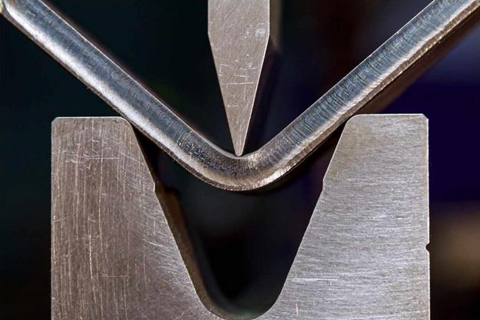

Как выбрать того подрядчика, который возьмёт на себя ответственность за выполнение качественной гибки металла.
Кому стоит доверить работы по гибке металла
Выбирая металлообрабатывающее предприятие, необходимо обращать внимание на те организации, в которых есть всё необходимое оснащение для качественной гибки листовых заготовок. Ориентироваться только на отзывы в Сети, конечно, не стоит. Гораздо проще связаться с подрядчиком для того, чтобы выбрать исполнителя напрямую, задав ему конкретные вопросы.

Тот, кто желает получить по-настоящему качественные услуги по гибке металла, должен, обратившись на гибочное производство, изначально выяснить:
Если готовых чертежей для обработки металла нет, то представителям организации, предоставляющим такую услугу, стоит задать вопрос о возможности разработки проекта. В штате зарекомендовавших себя на рынке металлообрабатывающих предприятий всегда есть те специалисты, что ответственны за решение подобных вопросов.
Какие дополнительные услуги металлообработки могут потребоваться
Те предприятия, что предоставляют услуги по гибке металла, зачастую проводят и полные циклы обработки заготовок, тем самым стараясь решить все те задачи, что ставит перед ними заказчик. Внушительный потенциал технической базы позволяет выполнять стандартные работы, реализуя даже самые сложные в исполнении индивидуальные проекты.
К числу дополнительных услуг, оказываемых подрядчиком, можно отнести плазменную резку для тех, кому требуются сложные, но точные разрезы. Фигурный раскрой листов можно осуществлять по предоставленным эскизам. Другими вариантами металлообработки являются точение, фрезеровка, строгание, сверление, шлифовка, протягивание и др.